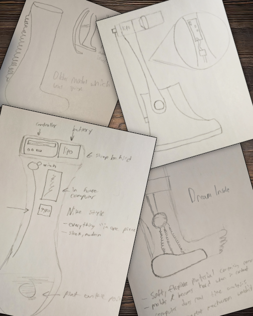

T-minus to Fall Semester · My Classes Begin Mon, Aug 24 2026
My move-in day: Fri, Aug 21 2026 · Rochester, NY
About Me
A math-first mind, headed for Rochester.
I'm a high-achieving math student, and I earned admission to the Kate Gleason College of Engineering at RIT. I built my path there as a fully independent student, navigating financial aid, disability services, and my own logistics without a family safety net.
This fall I start the Electrical Engineering program — and I'm bringing a project with me that turns my own mobility condition into a design problem worth solving.
View my portfolio →
Connor Lloyd
Electrical Engineering, RIT '30
"I cannot wait to walk onto that campus, sit down in my first engineering class, and earn every single A."

My Exoboot Mission
An open-source exoskeleton, built from my own experience.
I live with a mobility condition that makes standing and walking for long periods painful. Rather than treat that as a limit, I'm designing an open-source powered exoboot — wearable assistive tech that anyone could build, replicate, and improve.
My goal: low-cost, accessible mobility hardware, released openly so cost is never the barrier between someone and their own independence.
2026–2027 Campaign
I Fully Funded My First Year.
Working entirely on my own, I stacked grants, aid, and support programs to fully cover Year 1 tuition and living costs before a single class begins — no small feat for a fully independent student. My campaign page walks through exactly how I did it, plus what's still on my wishlist for a great first year on campus.
See How I Did It →